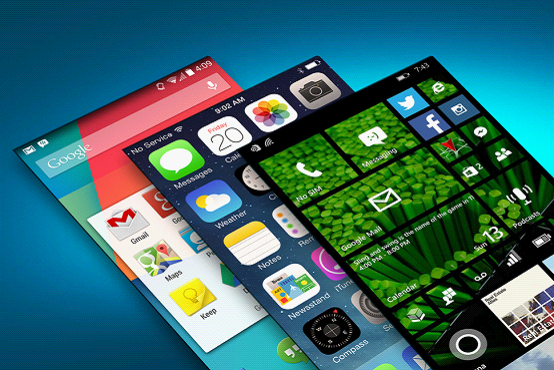
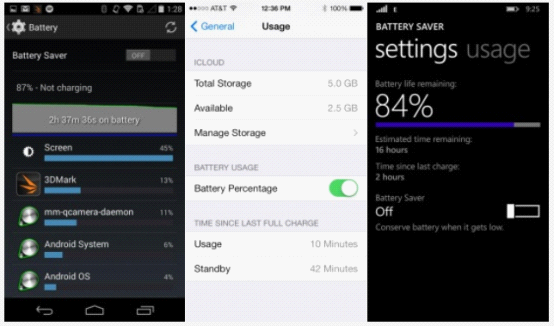

Si estás pensando en comprar un nuevo teléfono inteligente (quizás sea tu primer teléfono inteligente), es muy importante saber cómo gastar bien tu dinero para quedar satisfecho. Y elegir un teléfono inteligente implica en gran parte elegir el sistema operativo. Si estás indeciso entre iOS, Android o Windows Phone y no sabes cuál comprar, recientemente el sitio web de tecnología extranjero DigitalTrends ha realizado una comparación horizontal de todos los aspectos de los tres principales sistemas operativos, eligiendo al ganador en cada función y categoría, con la esperanza de ayudarte a comprar el teléfono inteligente que más te convenga.
Relación calidad-precio
En cuanto al precio, Apple siempre destaca; cada generación de iPhone ha sido uno de los smartphones más caros del mercado en su momento. El precio con contrato de 200 dólares (unos 1230 RMB) y el precio sin contrato de 650 dólares (unos 4000 RMB) son más altos que los de la mayoría de sus rivales. Incluso el iPhone 5c, una versión económica que es 100 dólares más barata, no puede considerarse barato.
Y Nokia, que ahora ha sido adquirida por Microsoft, siempre ha sido buena produciendo productos de buena calidad y bajo precio. Nokia ha lanzado teléfonos con sistema WP en diferentes rangos de precios, limitando seriamente el espacio de competidores como Android e iOS en el mercado de gama de entrada. Y fabricantes como Samsung, ZTE, LG, Lenovo y Huawei también se convertirán en socios de Microsoft en el futuro, lanzando más smartphones de bajo precio.
Por supuesto, en comparación con Android, WP no puede igualar ni en categorías de productos ni en escala. Una gran cantidad de fabricantes hacen todo lo posible en la plataforma Android para producir diversos modelos con una relación calidad-precio muy alta, y la estrategia gratuita de Android también ayuda a reducir los costos de los productos. Fabricantes como Samsung, Sony, LG, HTC, ZTE y Huawei son las principales fuentes de productos con sistema Android.
Ganador: Android
Interfaz

Guiados por WP, los tres sistemas principales han comenzado a cambiar hacia un estilo de interfaz simple, plano, fácil de usar y colorido. La mayor diferencia es que muchos fabricantes de teléfonos Android han personalizado sus propios sistemas operativos, por lo que hay muchas variaciones. Aunque la estructura de la interfaz de los tres sistemas ahora es básicamente la misma, como el centro de notificaciones que se activa deslizando hacia abajo, el dock de aplicaciones y los iconos, en cuanto a diversidad de interfaces, Android sigue siendo superior a iOS y WP.
Y el recién lanzado Android L ha inaugurado el nuevo estilo "Material Design", que combina a la perfección el minimalismo con animaciones simples, con el objetivo de crear un nuevo estilo para la plataforma y las aplicaciones de Google. Sin embargo, todavía no está claro cuánto impacto tendrá Android L en el mercado de sistemas operativos.
Apple, desde iOS 7, ha vuelto plano y vibrante el estilo de diseño del sistema; el cambio de profundidad de campo se ve muy elegante, y los cambios en los iconos también son muy fáciles de entender. Este cambio es la diferencia más notable desde el lanzamiento de la primera generación del iPhone en 2007. Sin embargo, todavía hay muchas personas que no están muy satisfechas con los cambios de iOS y prefieren el diseño skeuomórfico original.
WP, por su parte, adopta un diseño basado en mosaicos en cuadrícula, y se pueden ajustar sus tamaños. Se ve como el sistema Windows 8, pero sin widgets de escritorio. Para algunos usuarios, el estilo de WP es mucho más moderno que el de iOS y Android.
Ganador: Empate
Aplicaciones
En cuanto a la cantidad y calidad de las aplicaciones, WP está muy por detrás de los dos gigantes, iOS y Android.
Android: 1,2 millones;
iOS: 1,2 millones;
Windows Phone: 245.000.
iOS siempre ha estado a la cabeza en cantidad y calidad de aplicaciones, y también es la plataforma favorita de los desarrolladores. Aunque recientemente Android parece estar alcanzándolo, y cada vez hay más aplicaciones y juegos gratuitos en Google Play, en cuanto a variedad y calidad, todavía no puede compararse con iOS.
Ganador: iOS
Facilidad de uso de la tienda de aplicaciones

En realidad, las tiendas de aplicaciones de las tres plataformas no pueden ofrecer una experiencia de usuario perfecta; no es fácil encontrar lo que realmente quieres entre cientos de miles de aplicaciones. Sin embargo, relativamente hablando, la App Store de Apple es más específica en clasificación y recomendaciones que Google Play de Google, mientras que la tienda de Windows Phone de Microsoft ocupa el último lugar tanto en estética de la interfaz como en facilidad de uso.
Ganador: iOS
Diversidad de tiendas de aplicaciones
En Android, es muy conveniente instalar aplicaciones, ya sea conectándolo por USB a la computadora para copiarlas o descargándolas directamente. Además, la plataforma Android tiene muchas tiendas de aplicaciones de terceros para elegir, aunque esto también aumenta el riesgo de infectarse con malware. Si quieres más opciones de tiendas y formas sencillas de instalar y desinstalar, el resultado es evidente. Android es más abierto y accesible que sus dos competidores.
Ganador: Android
Duración y gestión de la batería

Como uno de los mayores problemas de los smartphones, la duración de la batería siempre es el factor más influyente. Dado que el hardware de las tres plataformas no es común, es difícil hacer una comparación directa. Aunque iOS está optimizado al máximo para cada miliamperio-hora, los dispositivos Android pueden adoptar fácilmente baterías de mayor capacidad. Además, Android tiene muchas aplicaciones que pueden estimar con precisión la batería restante, y la mayoría de los fabricantes también ofrecen un modo de ahorro de energía que puede reducir el rendimiento o cerrar programas en segundo plano cuando la batería está por debajo de cierto nivel.
Además, Android L incluirá opciones de protección de batería integradas, mientras que WP permite a los usuarios desactivar funciones en segundo plano y otras funciones innecesarias para ahorrar batería. Aunque Apple presentó con más detalle la forma en que iOS 8 gestiona el conteo de la batería en su evento de lanzamiento, todavía carece de aplicaciones o medidas efectivas de gestión de energía. Y en una comparación de batería, el consumo de iOS 7 era también muy rápido.
Ganador: Android
Actualizaciones del sistema
Las tres plataformas hacen un buen trabajo en las actualizaciones del sistema; cada pocos meses envían actualizaciones con cambios relativamente amplios para corregir errores y añadir nuevas funciones. Además, debido a que Apple y Microsoft controlan el ritmo de actualización del sistema, son superiores a Android en compatibilidad y puntualidad.
Aunque Apple deja algunos productos del año anterior a la venta cada año, es el que mejor resuelve el problema de la fragmentación del sistema. Y el abandono de los usuarios de Windows Phone 7 por parte de Microsoft, y el gravísimo problema de fragmentación de Google, nos resultan inolvidables. A menos que uses un dispositivo Nexus, que recibe las actualizaciones de Google de inmediato, ya sea Sony, Samsung o LG, si el fabricante OEM no actúa, es posible que nunca puedas actualizar. Además, algunos usuarios están limitados por los operadores y no necesariamente pueden disfrutar de las últimas funciones de Android o WP. Por lo tanto, Apple es el que mejor lo hace en este aspecto.
Ganador: iOS
Personalización

Aunque los tres sistemas tienen bastantes elementos personalizables, hay que admitir que esta es definitivamente una ventaja de Android. Cuando tienes un teléfono nuevo, puedes hacer varios ajustes según tu experiencia; también puedes instalar lanzadores de escritorio para cambiar la interfaz del sistema; configurar la pantalla de bloqueo, cambiar múltiples fondos de pantalla, ajustar libremente el tamaño de los widgets de la pantalla de inicio y los iconos de acceso rápido. iOS y WP solo ofrecen opciones limitadas, solo pueden cambiar el fondo y los iconos de acceso rápido.
El sistema WP permite cambiar el tamaño y el color de los mosaicos, y en WP 8.1 se añadió la función de imagen de fondo; iOS 8, aunque en el futuro podrá añadir algunos widgets, estos se limitan al centro de notificaciones. Además, Google siempre ha permitido a los usuarios de Android instalar métodos de entrada de terceros; Microsoft, aunque ha mejorado su método de entrada predeterminado, nunca ha abierto las puertas a terceros. Y iOS 8, que se lanzará oficialmente este otoño, también ha comenzado a adoptar una actitud abierta hacia los métodos de entrada de terceros.
Ganador: Android
Rooting, bootloader y jailbreak
Para los dispositivos Android, una vez que obtienes permisos de root, puedes cambiar el sistema a tu antojo. Aunque esto no es para todos, puedes obtener más aplicaciones, instalar los últimos sistemas sin esperar, tener las interfaces más recientes, deshacerte del software preinstalado inflado por los operadores, e incluso aumentar significativamente la velocidad de funcionamiento o la duración de la batería del dispositivo.
Y muchos fabricantes de Android incluso ofrecen herramientas oficiales de bootloader para personalizar el teléfono a un nivel más profundo. Esto es algo que Microsoft y Apple no permiten en absoluto. Solo unas pocas unidades de WP admiten rooting y bootloader, y el jailbreak de iOS siempre ha estado en conflicto directo con Apple. Incluso con jailbreak, solo se trata de eludir la App Store para instalar aplicaciones y algunos complementos del sistema.
Ganador: Android
Llamadas y SMS

Las tres plataformas tienen sus propias virtudes en esta función. Google ha integrado todo en Hangouts, permitiendo hacer llamadas, enviar mensajes de texto e incluso videollamadas a través de redes Wi-Fi. Por su parte, FaceTime y iMessages en la plataforma iOS pueden hacer casi lo mismo. Microsoft ofrece una integración profunda con Skype y, además de Windows, también es compatible con otras plataformas. Hangouts no funciona en Windows, e iMessages y FaceTime solo admiten la comunicación entre sistemas iOS y OS X.
Ganador: Empate
Correo electrónico
Los servicios de correo electrónico predeterminados de Android, iOS y Windows Phone son muy útiles y se pueden configurar rápidamente. Puedes cambiar entre varias cuentas de correo y verlas en una misma bandeja de entrada. Además, Android e iOS ofrecen una gran cantidad de aplicaciones de terceros para servicios de correo electrónico.
Ganador: Empate
Dispositivos periféricos
Los datos de encuestas muestran que los usuarios de iPad y iPhone están más dispuestos que los de Android y WP a gastar dinero en productos periféricos. Apple se ha asociado con fabricantes de accesorios para establecer un ecosistema completo para los dispositivos iOS. Muchos fabricantes han lanzado sus propios productos para el iPhone, seguidos de cerca por el Samsung Galaxy S5. Por otro lado, Android y WP adoptan el puerto microUSB estándar, mientras que Apple insiste en su propio puerto Lightning. Por lo tanto, si no usas un iPhone, es más fácil encontrar cargadores universales. Y no necesitas gastar mucho dinero extra en convertidores. Aunque los fabricantes de periféricos siguen teniendo como objetivo principal a los usuarios de iOS, ahora es muy difícil encontrar dispositivos que no sean compatibles con microUSB.
Ganador: iOS
Servicios en la nube

Apple va bastante rezagado en almacenamiento en la nube y copia de seguridad automática. Microsoft OneDrive y Google Drive ofrecen 15 GB de espacio gratuito multiplataforma (aunque actualmente Google Drive no es compatible con la plataforma WP), mientras que los usuarios de iCloud solo tienen 5 GB de espacio gratuito, limitado a Windows, Mac e iOS. Además, si necesitas comprar espacio adicional, Google Drive es el más barato: 100 GB cuestan solo 24 dólares al año (unos 145 yuanes), Apple cobra 100 dólares al año por 50 GB (unos 615 yuanes), y Microsoft cobra 50 dólares al año por 100 GB (unos 307 yuanes).
Ganador: Android
Copia de seguridad de fotos
Si usas el servicio Google+ en un dispositivo Android, puedes hacer copia de seguridad automática de todas tus fotos y videos, y en iOS también se puede usar Google+. OneDrive admite la copia de seguridad automática en los tres sistemas, mientras que el iCloud de Apple solo puede guardar las 1000 fotos más recientes del último mes, y no incluye videos. Aunque en iOS 8 se pueden guardar fotos permanentemente como en los otros dos sistemas, el espacio de solo 5 GB sigue siendo demasiado escaso en comparación con los 15 GB de Google Drive y OneDrive.
También cabe señalar que Google Drive permite hacer copias de seguridad ilimitadas de fotos y videos, y solo las fotos en resolución original ocupan espacio.
Ganador: Android
Asistente de voz

En los últimos tiempos, no han sido pocas las comparaciones entre Siri, Google Now y Cortana. Los tres asistentes de voz pueden interpretar o ejecutar diversos comandos. Siri es como un asistente sencillo: programa citas en el calendario, realiza búsquedas en la web y hace llamadas; Google Now puede proporcionar información útil adicional sin necesidad de que el usuario pregunte específicamente; si permites que Google Now recopile datos, te ofrecerá automáticamente los restaurantes más cercanos o los resultados de los partidos de tu equipo favorito.
Cortana no solo puede hacer el trabajo de Siri y Google Now, sino que también puede realizar llamadas y recordatorios dentro de aplicaciones de terceros, e incluso enviar mensajes a contactos. Parece que Microsoft ha invertido mucho esfuerzo en Cortana, y en el futuro será una gran ventaja de la plataforma WP frente a iOS y Android.
Ganador: Windows Phone
Conectividad
Todas las plataformas móviles son compatibles con Bluetooth y conexiones Wi-Fi, mientras que Android y WP ofrecen un mejor soporte de la tecnología NFC, lo que facilita el intercambio de datos de corto alcance y los pagos móviles, pero iOS por ahora no es compatible. NFC se puede utilizar para transferencias rápidas de archivos, compartir contactos o enlaces web, e incluso para controlar altavoces móviles y reproducir música. No obstante, el soporte de NFC en WP no es muy bueno actualmente, pero mejorará en el nuevo WP 8.1.
Ganador: Android
Seguridad
La mayoría de las aplicaciones maliciosas están dirigidas a dispositivos Android, por lo que los problemas de seguridad siempre son el mayor obstáculo al que se enfrenta Google. Sin embargo, mientras los usuarios dejen de descargar aplicaciones fuera de Google Play, no tendrán demasiados problemas de seguridad. Las tiendas de aplicaciones desarrolladas por grandes fabricantes como Samsung también ofrecen garantías de seguridad.
Apple, por su parte, lo ha hecho muy bien en este aspecto, con una seguridad muy sólida para los consumidores comunes. En particular, el nuevo reconocimiento de huellas dactilares TouchID y la cooperación con IBM dirigida a los usuarios empresariales ayudan a Apple a garantizar mejor la seguridad de sus clientes. Esta es también una de las mayores ventajas de iOS frente a Android. En cuanto a Windows Phone, actualmente no hay demasiados programas maliciosos interesados en WP debido a su insuficiente nivel de penetración. No obstante, la reputación de Microsoft en materia de seguridad entre los usuarios comerciales es bastante buena.
Ganador: iOS
Mapas

Las tres plataformas ofrecen excelentes soluciones de mapas, y la mayoría de las funciones son bastante similares, incluida la descarga sin conexión, el análisis del tráfico y la navegación. Sin embargo, Google Maps es definitivamente mejor en este aspecto, ya que ofrece puntos de interés más detallados, información más minuciosa y mayor precisión.
Ganador: Android
Cámara
La cámara es otro ámbito en el que Apple tiene una gran ventaja. Aunque en megapíxeles, el Galaxy S5, el Lumia 1020, etc., superan los 8 megapíxeles del iPhone 5s, hay que admitir que solo el iPhone 5s resulta más satisfactorio en cuanto al color, el detalle y el efecto general de las fotos.
Además, la interfaz de la aplicación de cámara de iOS es rápida y fácil de usar, sin demasiados ajustes y configuraciones complicados, lo que permite tomar fotos en cualquier momento y lugar. En Android, como muchos fabricantes OEM añaden sus propias aplicaciones de cámara, muchas funciones son en realidad trucos inútiles. Apple es, sin duda, otra vez la ganadora.
Ganador: iOS
Facilidad de uso
Actualmente, después de años de desarrollo, las tres grandes plataformas se han vuelto muy intuitivas y fáciles de usar. Para un usuario de edad avanzada, operaciones algo complejas como las de Android no son muy adecuadas. No obstante, Samsung ha desarrollado un "Modo simple" específicamente para simplificar el proceso de uso del teléfono, o también se pueden instalar aplicaciones de terceros para lograr el mismo objetivo. Tanto Android como iOS tienen muchas aplicaciones especialmente pensadas para personas mayores.
Algunos creen que Android es más complejo que iOS, pero esto es un poco demasiado absoluto. Mientras no quieras, no necesitas realizar una personalización más profunda. WP, por su parte, es más intuitivo en su interfaz y, después de una configuración sencilla, no tiene más opciones para ajustes profundos.
Ganador: Empate

Resumen
Android es, hasta ahora, la plataforma más completa en cuanto a funciones. Con el apoyo de fabricantes como Samsung y LG, los consumidores tienen más opciones de productos en diferentes rangos de precios, mayor libertad de desarrollo y opciones de personalización, pudiendo crear un teléfono inteligente perfecto según sus preferencias.
Los servicios en la nube y las aplicaciones de Google también son un gran atractivo para los consumidores. Sin embargo, la mayor ventaja de Android también trae consigo su mayor impacto negativo: el problema de la fragmentación del sistema. La brecha entre los modelos de gama alta y los de gama de entrada es demasiado grande, lo que ha provocado que muchos usuarios tengan una mala impresión de Android, aunque Google ha estado trabajando duro para reducir esta diferencia.
iOS es una plataforma muy estable y madura, y ofrece una interfaz operativa unificada. La mejor tienda de aplicaciones, la mayor selección de dispositivos periféricos y la mejor cámara contribuyen a que Apple haga todo más sencillo. Además, Apple controla estrictamente las actualizaciones de versiones del sistema, de modo que tanto los consumidores como los usuarios empresariales pueden experimentar la versión más reciente del sistema de inmediato.
Los defectos de iOS son su precio excesivamente alto, su excesivo hermetismo, la falta de personalización y unos servicios en la nube poco generosos.
En esta comparación, Windows Phone parece estar siempre en una posición de "simple espectador" por ser la plataforma con menos tiempo en el mercado, pero Microsoft está alcanzando el ritmo de Apple y Google con esfuerzos incansables. En el futuro sistema WP 8.1, podemos ver un progreso muy evidente, especialmente la ventaja del asistente de voz Cortana. No obstante, la falta de aplicaciones de alta calidad es el mayor punto débil de la plataforma WP. Sin embargo, en facilidad de uso, WP no le va a la zaga a iOS y Android en absoluto. Los potentes servicios en la nube de Microsoft y las populares herramientas de Office pueden atraer a muchos usuarios empresariales. Pero por ahora, aparte de Cortana, no parece haber otras razones que supongan un fuerte atractivo para los consumidores.
Fuente: Tencent Digital, artículo original:digitaltrends
Haz clic para compartir notas
<p style="font-size:14px;">¡Las notas deben ser una extensión del contenido de este artículo!</p><br> <p style="font-size:12px;"><a href="../tougao.html" target="_blank">Envío de artículos, haz clic aquí</a></p> <p style="font-size:14px;"><a href="./runoob-user-test-intro.html" target="_blank">Cómo obtener el código de invitación de registro</a></p> <h3 class="text-muted"><i class="fa fa-info-circle" aria-hidden="true"></i> ¡Antes de compartir notas, debes <a href=".." class="runoob-pop">iniciar sesión</a>!</h3> <p><a href="./runoob-user-test-intro.html" target="_blank">Cómo obtener el código de invitación de registro</a></p>